눌러 쓴 종이
앱 전체가 한 장의 종이입니다. 카드를 쌓지 않고, 인디고 한 색이 동작과 선택과 초점을 맡습니다. 화면을 꾸미느라 당신의 작업을 가리지 않습니다.
ADELIE DRAW · DIGITAL STATIONERY
스티커팩을 구경하고, 종이 한 장을 골라 직접 꾸미고, 만든 페이지를 기기에 간직하거나 이미지로 공유하는 앱입니다. 매일 일기를 써야 하는 앱이 아니라, 마음에 든 팩으로 한 장을 만들어 보는 앱입니다.
출시 준비 중입니다. 앱 스토어 배포와 정책·지원 페이지는 아직 공개 전이며, 준비되는 대로 이 페이지에 안내합니다.
HOW IT WORKS
01
홈과 스튜디오가 새 스티커팩과 신상품을 먼저 보여줍니다. 팩 상세에서 구성 개수와 샘플 페이지를 확인하고 바로 사용해 볼 수 있습니다.
02
빈 종이, 내 사진, 저장해 둔 템플릿, 작업 중이던 페이지 중에서 시작합니다. 사진 · 스티커 · 텍스트 · 종이를 얹어 한 장을 완성합니다.
03
작업은 자동으로 저장됩니다. 날짜와 검색으로 다시 찾아 이어 쓰고, 완성한 페이지는 이미지로 저장하거나 공유합니다.
FIVE DESTINATIONS
홈 · 페이지 · 만들기 · 스튜디오 · 라이브러리. 아래 이미지는 실제 앱 화면 캡처입니다.
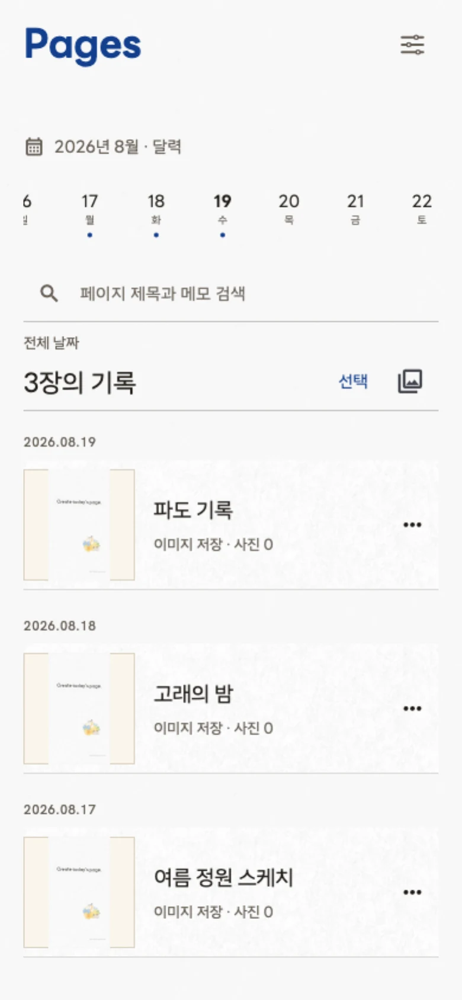
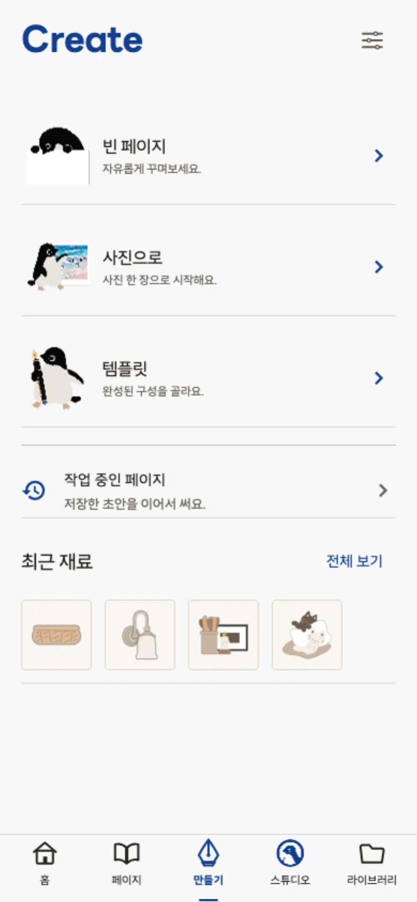
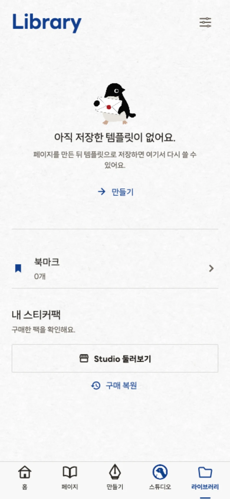
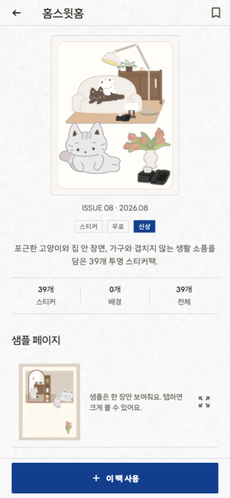
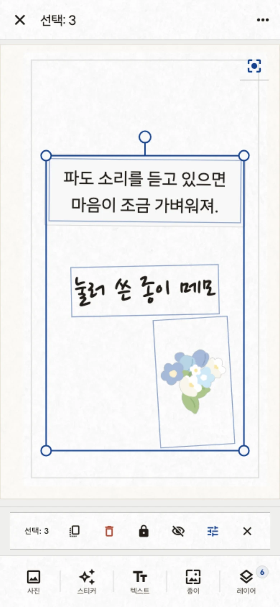
EDITOR
네 가지 재료만으로 충분하도록 만들었습니다. 무엇을 눌렀는지, 무엇이 저장됐는지 항상 보이게 합니다.
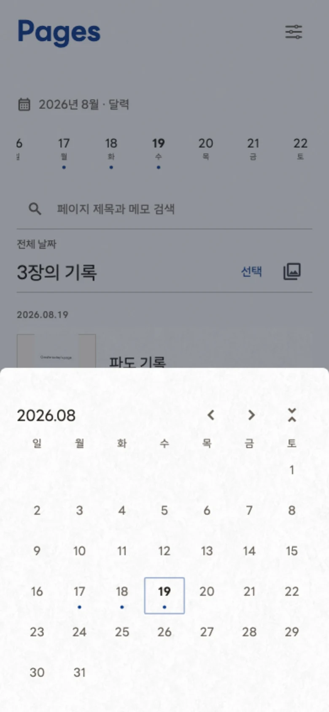
YOUR PAGES
페이지는 편집 · 보관 · 공유의 단위입니다. 다시 찾고, 이어 쓰고, 필요할 때만 내보냅니다.
PACKS
아래 네 가지는 현재 앱에 함께 담겨 있는 팩이며 모두 무료입니다. 출시 시점에는 15개 이상의 팩을 목표로 준비하고 있습니다.
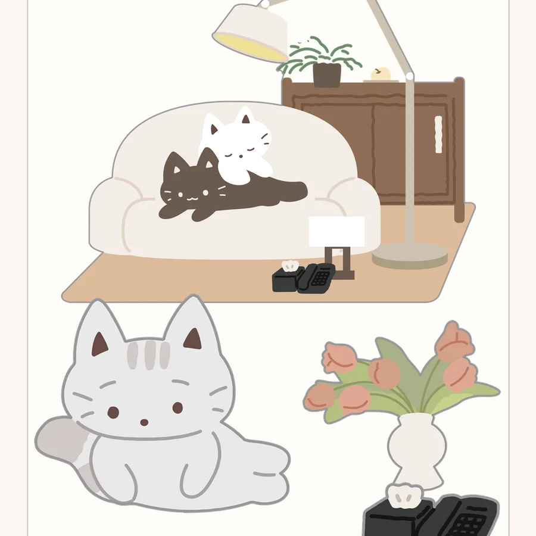
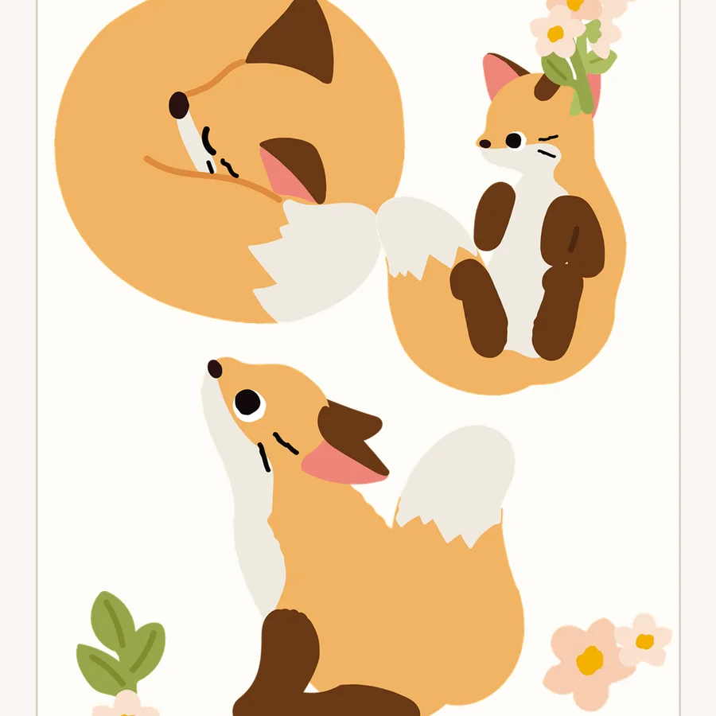
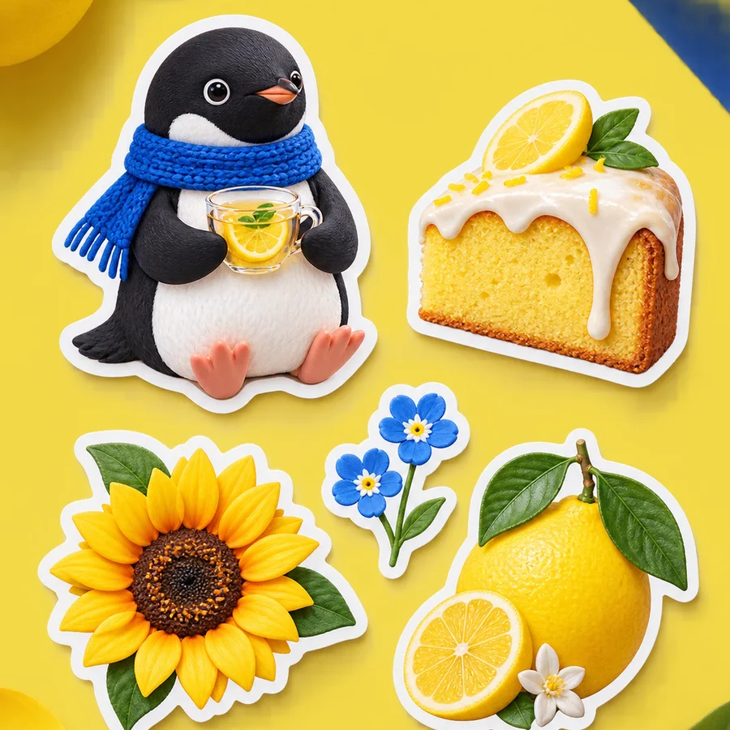
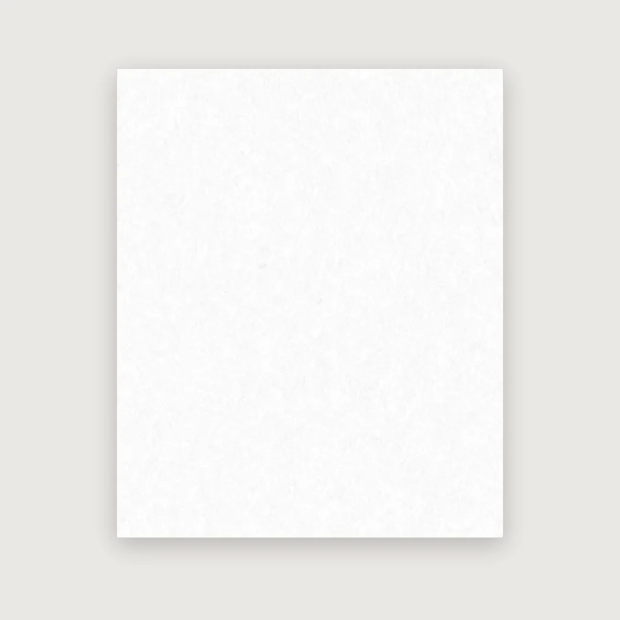
USAGE EXAMPLE
팩을 보고 무엇을 만들지 막막하지 않도록, 앱은 팩의 스티커로 구성한 활용 예시를 함께 보여줍니다.
레몬 파운드 케이크 스티커팩과 아델리드로우 펭귄으로 구성한 예시 ‘오늘의 작은 간식’입니다. 좋아하는 간식과 짧은 문장으로 오늘을 가볍게 남기는 한 장입니다.
활용 예시는 팩의 쓰임을 보여주기 위한 이미지입니다. 편집 가능한 완성 문서와는 다르며, 팩별 제공 템플릿은 별도로 준비하고 있습니다.
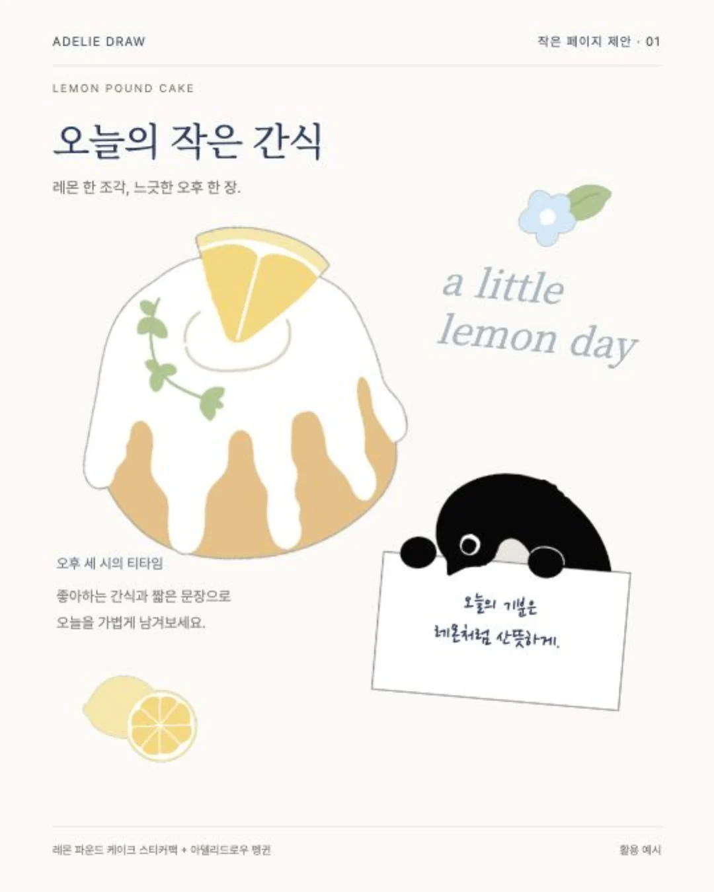
CRAFT
앱 전체가 한 장의 종이입니다. 카드를 쌓지 않고, 인디고 한 색이 동작과 선택과 초점을 맡습니다. 화면을 꾸미느라 당신의 작업을 가리지 않습니다.
팩을 앞세우는 것은 의도된 선택입니다. 다만 홍보는 실제 팩의 내용을 그대로 보여줘야 합니다. 샘플과 완성 문서가 다르면 다르다고 적습니다.
44pt 이상의 터치 영역, 큰 글씨 설정, 의미 있는 접근성 레이블, 고대비와 모션 줄이기를 설계 기준으로 지킵니다.
한국어 · English · 日本語 · 中文을 지원합니다. 문구는 화면마다 번역만 얹는 것이 아니라 네 언어에서 함께 검수합니다.
CURRENT STATUS
아직 만드는 중인 앱입니다. 준비된 것과 아직 아닌 것을 그대로 적어 둡니다. (기준 시점 2026년 9월)
FAQ
아직입니다. 앱 스토어 배포를 준비 중이며, 공개되면 이 페이지에 링크를 올립니다.
아닙니다. 마음에 드는 팩으로 한 장을 만들어 보는 것이 기본입니다. 날짜로 정리되긴 하지만, 매일 채워야 하는 기록을 요구하지 않습니다.
현재는 기기 안에 저장됩니다. 앱에 보관한 페이지는 언제든 다시 열어 편집할 수 있고, 갤러리로 내보내려면 이미지로 저장하면 됩니다. 클라우드 백업은 아직 제공하지 않습니다.
지금 앱에 담긴 팩은 모두 무료입니다. 출시 때는 무료 팩과 유료 팩을 함께 둘 계획이며, 정확한 가격과 구성은 확정되면 알립니다.
스티커 단독 내보내기는 팩마다 허용 여부가 다릅니다. 완성한 페이지는 이미지로 저장하거나 공유할 수 있습니다.
네. 휴대폰과 태블릿 레이아웃을 함께 준비하고 있습니다.